Overview
Part 1: Tracing Rays through Lenses
Task 1: Tracing
- LensElement::pass_through
- This function determines three things: 1. It decides whether the ray has intersection with the spherical lens element by calling intersect(...). 2. If the ray intersects with the lens, then, we need to make sure that the intersection point is NOT farther than aperture/2 away from the z-axis. 3. It refracts the ray using Snell’s law by calling refract(...). In this step, it also updates prev_ior to ior. (ior is the index of refraction. Air has an ior of 1).
- LensElement::intersect
- Given a ray, we need to determine its intersection with the spherical lens element. We can calculate t using quadratic formula and pick its correct quadratic root by testing r.d.z * radius > 0 ? t1 : t2 (assuming t1 less than t2). Additionally, t has to be in the range(min_t and max_t) to be valid. Then, we can assign the intersection point to be P = o+t*d.
- LensElement::refract
- Refraction is complex for compound lenses. This function refracts the ray with this lens element unless the lens radius is 0. We need to consider both backward and forward rays. When a ray is backward, we need to flip the ratio of prev_ior/ior and the normal. One thing to keep in mind is we always need to normalize a vector.
- Tracing Functions
- We implemented Lens::trace and Lens::trace_backwards to enable ray tracing from the sensor out into the world as well as from the world backwards through the lens towards the sensor.
Here are the lenstester results for four configurations of lenses.
|
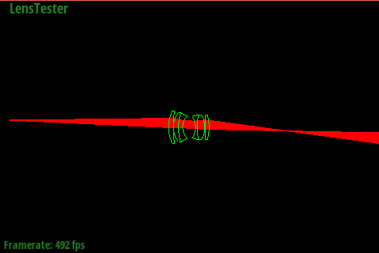
|
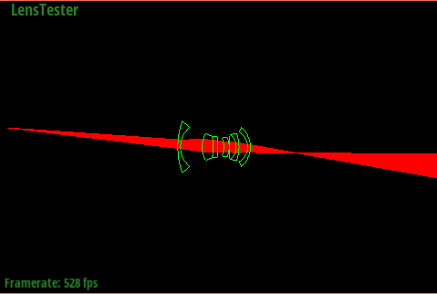
|
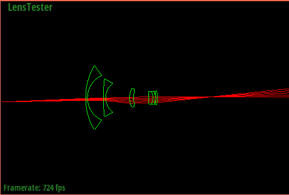
|
|
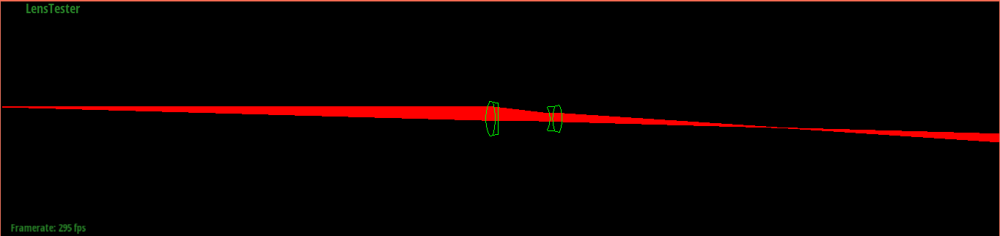
|
Task 2: Lens and LensCamera helper functions
- Lens::set_focus_params
- The parameters of four types of lenses are computed below:
| 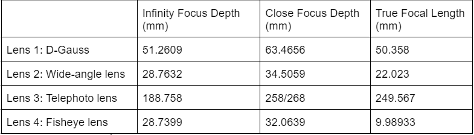 |
- Lens::focus_depth
- This function is used to find the conjugate of a ray starting from the sensor at depth d.
- Lens::back_lens_sample()
- We build this sampler to randomly sample a point on the 2D circle of the back of the lens element nearest the sensor by generating a random radius and angle of the sampled point.
- LensCamera::generate_ray
-
In this function, we generate a ray from the sensor pixel (x,y) pointing toward a point returned by back_lens_sample and traces the ray through the Lens to the world.
Besides the basic functionalities, we also implemented some methods to optimize the performance. The noise reduction algorithm is used for generating rays multiple times and recording the number of rays trying to get correct ray weighting for PathTracer::raytrace_pixel.
Also, we include the correct cosine factor and deal with invalid rays by setting the cosine factor to 0.
(Note: for the noise reduction and cosine factor part, we also updated PathTracer::raytrace_pixel and Camera::generate_ray accordingly)
- Pathtracer Rendering Result
- See “Part 2: Contrast-based Autofocus: without autofocus (left)”
Part 2: Tracing Rays through Lenses
Task 1: A simple focus metric - variance
- LensCamera::focus_metric
- This function iterates through an image buffer’s data members and calculates the variance of each color channel, then adds them to get the focus metric. Image patches that are sharper (less out of focus) will have higher variance, and blurrier (more out of focus) ones will have lower variance. This is because variance can detect contrast among pixels in the image patches, and an image patch where there is higher contrast and variability among its pixels is sharper.
Task 2: Autofocus search
- LensCamera::autofocus
- This function estimates the depth where the image patch has the highest focus metric (i.e. is the sharpest). This is done by stepping through sensor depths from infinity_focus to near_focus, and calculating the focus metric at each sensor depth. If the focus metric is higher than the previous best focus metric, we update the best focus metric and best sensor depth. At the end, we set the camera’s sensor depth to the sensor depth that had the best focus metric. Our step size is sqrt(36*36 + 24*24) / sqrt(screenW*screenW + screenH*screenH). This is because we want the maximum size of the circle of confusion to be <= the size of one pixel.
Here are the results from using autofocus. Since the original images using lens 2 and lens 4 are too small, we also included images that are zoomed in before rendering as well as images from different angles. In our result, for those images that were already sharp before autofocus, the effect of autofocus is not very obvious; but for those images that were blurry at first, our implementation of autofocus made the images much sharper and more in focus.
- Parameters for the below examples:
- number of camera rays per pixel = 16
number of samples per area light = 16
maximum ray depth = 6
width and height of output image = 480 * 360
|
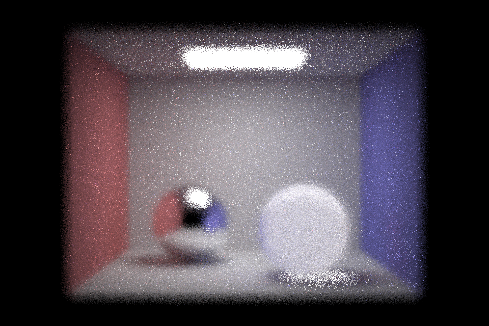
(infinity_focus=51.2609mm, near_focus=63.4656mm) |
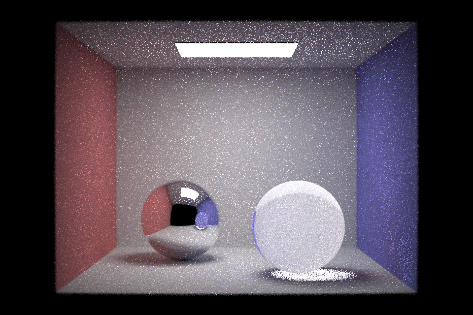
(best sensor depth=54.1484mm) |
|
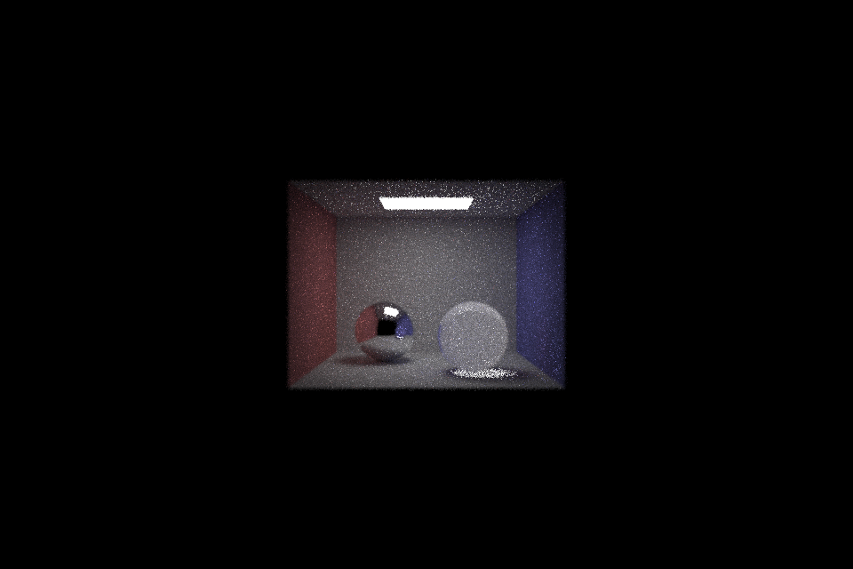
(infinity_focus=28.7632mm, near_focus=34.5059mm) |

(best sensor depth=29.2882mm) |
|
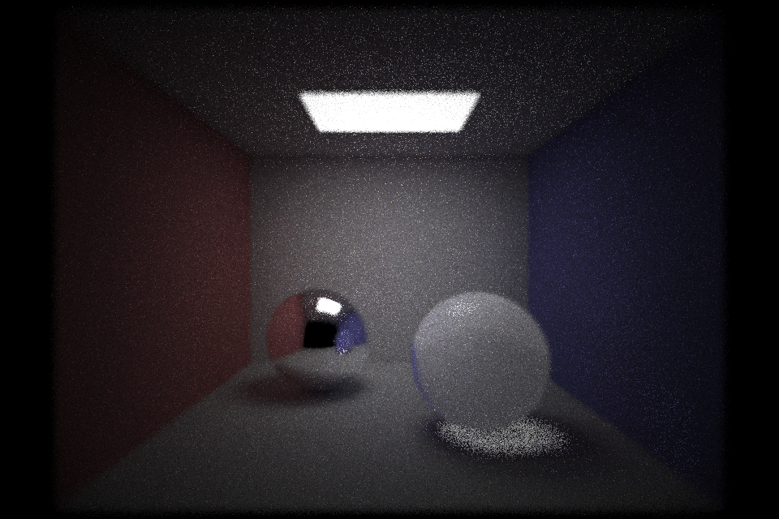
|

|
|
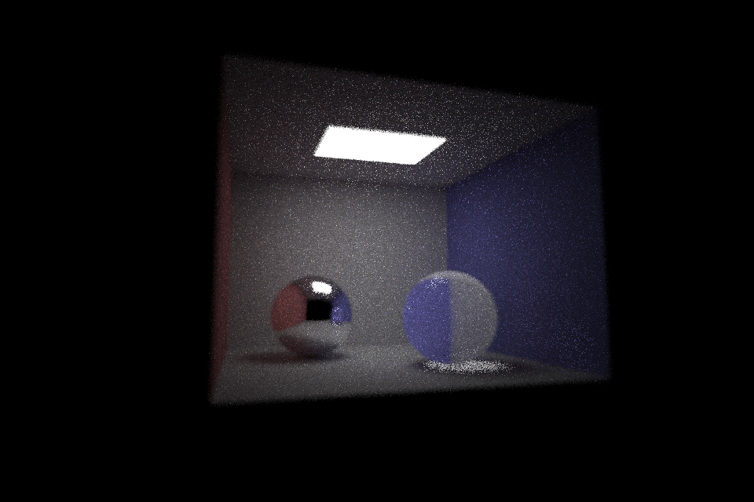
|
|
|
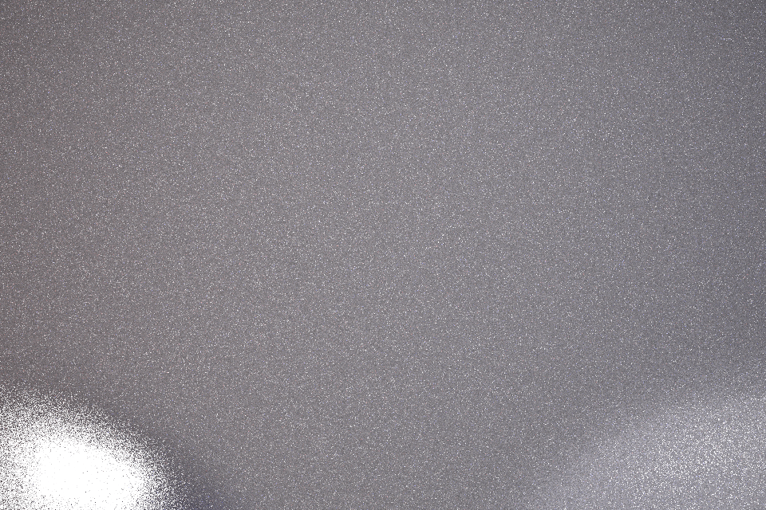
(infinity_focus=188.758mm, near_focus=258.268mm) |
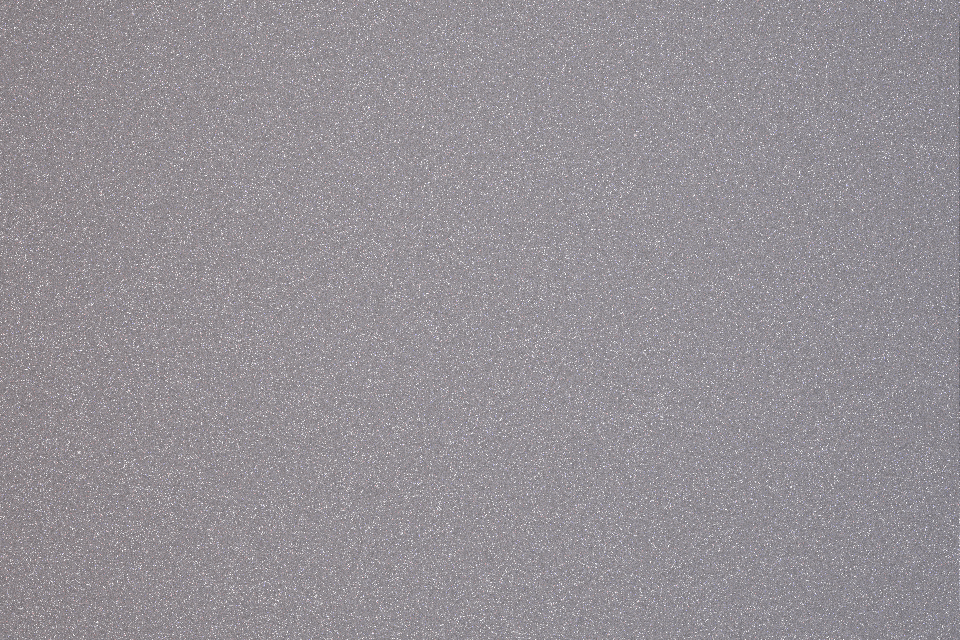
(best sensor depth=255.733mm) |
|
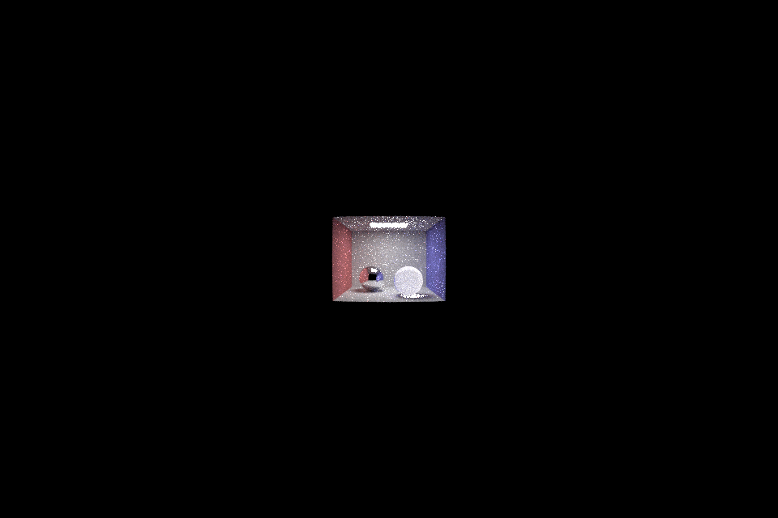
(infinity_focus=28.7399mm, near_focus=32.0639mm) |
(best sensor depth=28.8149) |
|
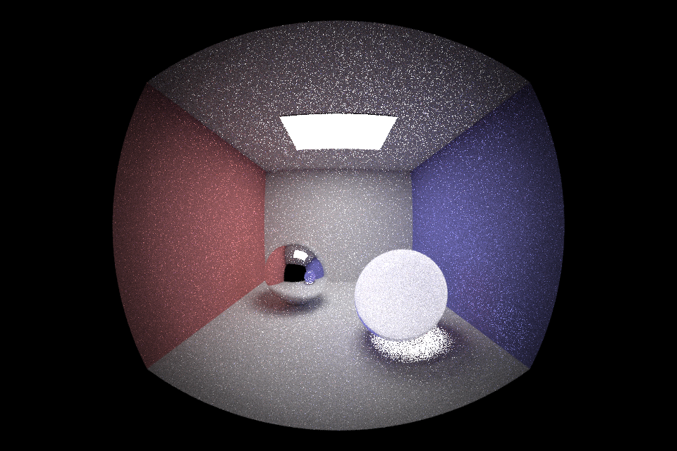
|
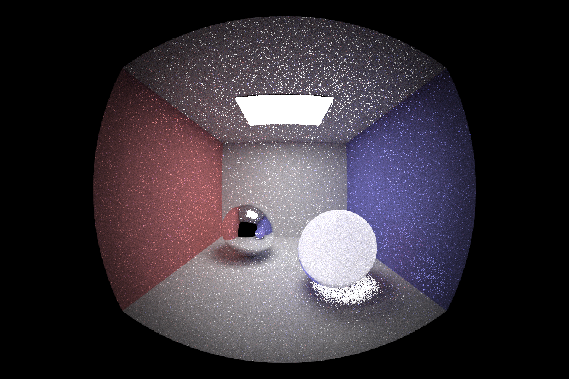
|
|
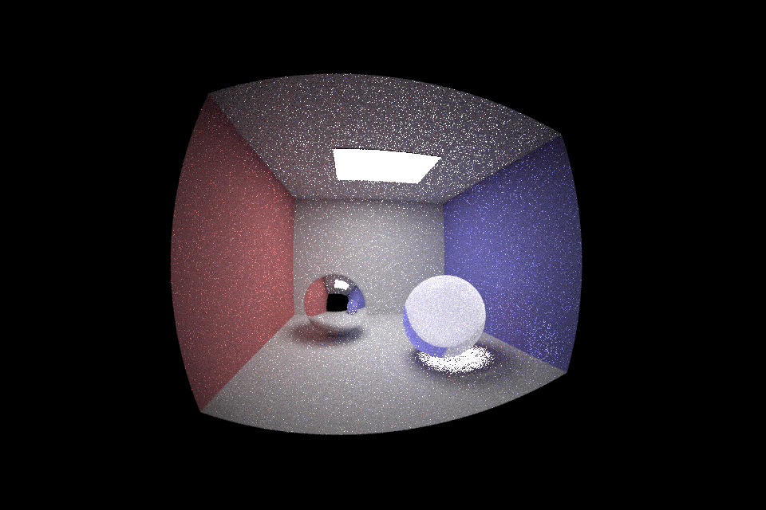
|
|
- Things that we learned in part 2:
- 1. At first, we used a large image patch for autofocus, but it was very slow and difficult to generate the result, since the process of calculating the focus metric involved a large number of pixels. Then, we chose image patches that were much smaller than before, and this largely reduced the amount of time it took to generate the result.
2. We also learned how to choose the small image patch for autofocus. Since our autofocus algorithm is contrast-based, it means that in order to produce a good result, the image patch that we choose needs to have a high contrast, otherwise the difference between the focus metric of a sharp image patch and a blurry one will not be obvious. To ensure that the contrast is high, we chose the image patches at places that have object edges.
Part 3: Faster contrast-based autofocus
- Adjustments to the search algorithm:
- Because focus improves as we approach the correct image depth and degrades as we move away, we implemented a check that breaks out of the autofocus function if we go 8 steps without updating with a newly found best sensor depth again, based on the focus metric. While this adjustment does not necessarily find the global best sensor depth, it does usually find a sensor depth where the image is reasonably sharp. Since we start from infinity_focus when stepping through all the sensor depths, this adjustment will reduce a larger amount of time if the best sensor depth is closer to infinity_focus (rather than close to near_focus), because it helps cut the time when the sensor depth is becoming farther away from the best sensor depth.
- Adjustments to the focus metric:
- We are planning to implement the Sum-Modified Laplacian metric, which is considered to be more robust than our current focus metric that uses variance, from this paper on Shape from Focus.
Part 4: Updated plan for additional improvements to our project
- 1. Add acceleration algorithms about sampling and BVH to make the rendering process faster.
2. Create a more sophisticated pixel sampler that generates jittered samples.